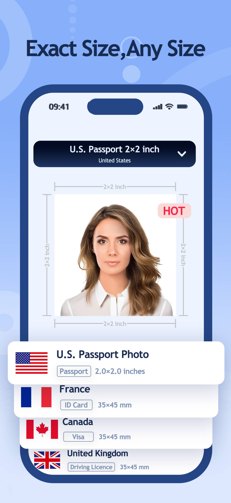
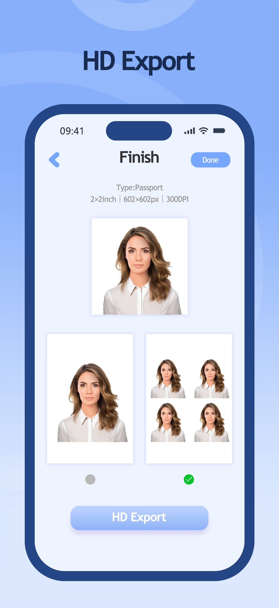
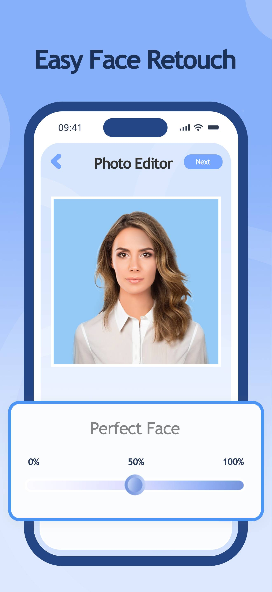

Passport Photo Maker – free ID & passport photos on iOS and Android
Passport Photo Maker is a free ID and passport photo app for iOS and Android that creates compliant photos in three steps. It has built-in standard sizes for countries worldwide, one-tap AI background removal, and free high-resolution export after watching an ad.

- Platforms
- iOS (App Store) and Android (Google Play)
- Price
- Free, ad-supported. HD export unlocked by watching an ad. No subscription, no in-app purchases.
- Category
- Photography
- Core use
- Passport, visa, student ID, resume/CV, graduation, and driver's license photos
- App languages
- English and Simplified Chinese
What Passport Photo Maker does
Passport Photo Maker turns a phone photo into a document-ready ID or passport photo. You pick a size, capture or upload a photo, and set the background color; the app removes the original background with AI and exports a high-resolution image. It is designed to be usable without any photo-editing experience.
Key features
- Global size presets: built-in standard ID and passport photo sizes for countries around the world, plus fully custom dimensions.
- One-tap AI background removal: the background is cut out automatically and replaced with a standard background color.
- AI retouching: optional skin smoothing, eye brightening, and whitening, with adjustable intensity.
- High-resolution export: photos export at high resolution without compression.
- Print layout: arrange multiple copies on a 6×4 inch sheet for printing at home or at a photo kiosk.
How it works
- Choose a size from the country and document presets, or enter custom dimensions.
- Take a photo in the app or upload one from your library.
- Choose a background color, then export the finished high-resolution photo.
Who it's for
Passport Photo Maker is built for people who need a document photo without going to a studio: travelers preparing passport and visa applications, students making student-ID or resume photos, job seekers who need a CV headshot, and anyone who would rather not pay for a passport photo. It is free to use in every supported country.
Pricing
Passport Photo Maker is free and ad-supported. You can export photos in high resolution for free after watching an ad. There is no subscription and there are no in-app purchases.
Screenshots




Frequently asked questions
Is Passport Photo Maker free?
Yes. Passport Photo Maker is free to use, and you can export high-resolution photos for free after watching an ad. There is no subscription and no in-app purchases.
What ID photo sizes does it support?
It includes standard ID and passport photo sizes for countries around the world, and you can also enter fully custom dimensions.
Can it remove or change the photo background automatically?
Yes. It uses AI to remove the background in one tap and lets you switch to a standard background color.
Does it work on iPhone and Android?
Yes. It is available on the App Store for iOS and on Google Play for Android.
What can I use the photos for?
You can use them for passports, visas, student IDs, resumes and CVs, graduation photos, and driver's licenses, among other documents.
How many steps does it take to make a photo?
Three. You choose a size, take or upload a photo, and choose a background color, then export the result.
Does it include photo retouching?
Yes. It offers AI retouching such as skin smoothing, eye brightening, and whitening, with adjustable intensity.
Can I print several photos on one sheet?
Yes. You can arrange multiple photos on a 6×4 inch sheet for printing.